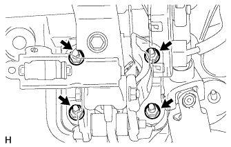

ПЕДАЛЬ ТОРМОЗА (для моделей с гидравлическим усилителем тормозной системы) > СНЯТИЕ |
| 1. ОТСОЕДИНИТЕ ПРОВОД ОТ ОТРИЦАТЕЛЬНОГО ВЫВОДА АККУМУЛЯТОРНОЙ БАТАРЕИ |
| 2. СНИМИТЕ ПОДУШКУ БЕЗОПАСНОСТИ № 1 ДЛЯ ЗАЩИТЫ НОГ В СБОРЕ |
Снимите подушку безопасности № 1 для защиты ног в сборе (Нажмите здесь).
| 3. СНИМИТЕ СТЯЖНУЮ ПРУЖИНУ ПЕДАЛИ ТОРМОЗА |
| 4. СНИМИТЕ ШТИФТ ШТОКА |
Снимите фиксатор и штифт штока с рычага педали тормоза.
| 5. СНИМИТЕ ВЫКЛЮЧАТЕЛЬ СТОП-СИГНАЛОВ В СБОРЕ |
Отсоедините разъем выключателя стоп-сигналов.
Снимите выключатель стоп-сигналов (Нажмите здесь).
| 6. СНИМИТЕ КРОНШТЕЙН ПЕДАЛИ ТОРМОЗА В СБОРЕ |
 |
Выверните установочный болт усиления кронштейна педали тормоза.
Для моделей с левосторонним рулевым управлением:
Снимите гидравлический усилитель тормозной системы в сборе (Нажмите здесь).
Для моделей с правосторонним рулевым управлением:
Снимите гидравлический усилитель тормозной системы в сборе (Нажмите здесь).
|  |
Отверните 4 гайки и снимите кронштейн педали тормоза в сборе.